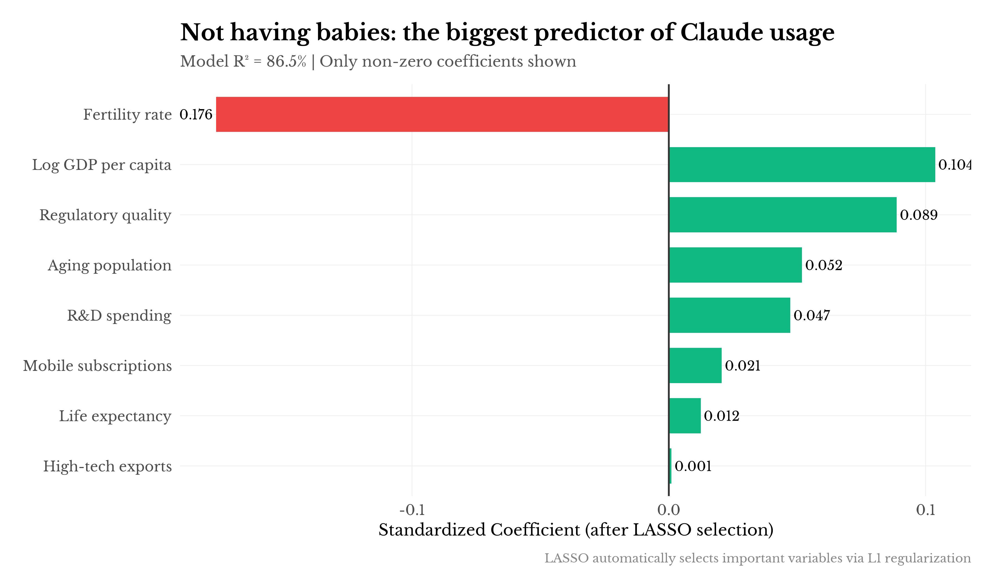

Some curious patterns in the Anthropic Economic Index
Anthropic released their Economic Index recently—one of the first public datasets on actual AI assistant usage at the country level. I played with it over a weekend. A few patterns emerged that seem worth noting, though I want to be careful about over-interpreting cross-country regressions with n ≈ 100.
The report notes that Claude usage tracks GDP, internet penetration, and governance quality. This is unsurprising and probably robust. Richer countries with better infrastructure adopt new technologies faster. We've known this since, what, Rosenstein-Rodan?
The question that interested me: which of these factors do independent work? They're all correlated. GDP predicts governance. Governance predicts R&D spending. R&D spending predicts education. The usual development cluster.
Separating signal from collinearity requires some regularization.
I threw 19 World Bank indicators into a series of specifications:
| Model | N | R² | Adj R² |
|---|---|---|---|
| (1) GDP only | 103 | 0.756 | 0.754 |
| (2) + Internet, Reg. | 103 | 0.784 | 0.777 |
| (3) + Fertility, Aging | 103 | 0.854 | 0.848 |
| (4) Core model | 103 | 0.862 | 0.853 |
| (5) Kitchen sink | 103 | 0.875 | 0.846 |
| Variable | Coefficient | Std. Error | t-stat | p-value | |
|---|---|---|---|---|---|
| (Intercept) | -4.349 | 0.500 | -8.69 | 0.0000 | *** |
| log_gdp | 0.166 | 0.103 | 1.62 | 0.1092 | |
| fertility | -0.206 | 0.035 | -5.85 | 0.0000 | *** |
| aging | 0.007 | 0.004 | 1.54 | 0.1257 | |
| regulatory_quality | 0.121 | 0.053 | 2.28 | 0.0249 | * |
| rd_spending | 0.055 | 0.024 | 2.29 | 0.0243 | * |
| life_expectancy | 0.002 | 0.007 | 0.32 | 0.7479 |
† p < 0.1, * p < 0.05, ** p < 0.01, *** p < 0.001
The full model has the usual problems—coefficient instability, likely overfitting. LASSO helps here.
Variables surviving L1 regularization (10-fold CV):
| Variable | Coefficient |
|---|---|
| fertility | -0.1763 |
| log_gdp | 0.1037 |
| regulatory_quality | 0.0887 |
| aging | 0.0518 |
| rd_spending | 0.0473 |
| mobile | 0.0206 |
| life_expectancy | 0.0125 |
| hightech_exports | 0.0010 |
LASSO R² = 86.5%
The result I didn't expect: fertility rate is the strongest predictor. Negative coefficient—lower fertility, higher Claude usage. This holds after controlling for GDP, governance, R&D, and the rest.
What to make of this? A few possibilities. Low fertility correlates with aging populations and labor scarcity, which might increase demand for productivity tools. Or it's proxying for something cultural about time orientation and technology adoption. Or it's noise—100 countries isn't that many observations. I lean toward the labor scarcity story but wouldn't bet heavily on it.
Variables that got zeroed out: internet access, tertiary education, corruption control. They're correlated with the survivors but don't add independent signal. Suggestive, but again, small n.

Who uses Claude more than their GDP predicts?
| Country | Residual |
|---|---|
| Georgia | 0.52 |
| Israel | 0.44 |
| Sri Lanka | 0.42 |
| Armenia | 0.41 |
| Montenegro | 0.40 |
| Nepal | 0.39 |
| Tunisia | 0.38 |
| Ukraine | 0.35 |
| South Korea | 0.34 |
| Moldova | 0.33 |
| Country | Residual |
|---|---|
| Angola | -0.88 |
| Tanzania | -0.60 |
| Uzbekistan | -0.58 |
| Qatar | -0.53 |
| Tajikistan | -0.44 |
| Botswana | -0.37 |
| Burundi | -0.35 |
| Kazakhstan | -0.35 |
| Mexico | -0.34 |
| Azerbaijan | -0.31 |
The overperformer list is interesting: several post-Soviet states (Georgia, Armenia, Ukraine, Moldova), some South Asian countries (Nepal, Sri Lanka). Common thread might be: strong technical education traditions, English proficiency, maybe diaspora effects. Or maybe I'm pattern-matching too hard.
Underperformers include resource-extraction economies and countries with internet restrictions. The Turkmenistan result is almost too large to be informative—there's probably something mechanical going on there.

This is where it gets strange. BCG surveyed 21 countries about ChatGPT usage. I matched this to the Claude data.
Correlation between self-reported AI use and actual Claude usage: r = -0.43
Negative. India reports the highest ChatGPT adoption (45%) but has low Claude usage per capita. The pattern holds for Indonesia, Brazil, South Africa.
The obvious objection: ChatGPT ≠ Claude. Maybe there's product substitution—India uses ChatGPT, not Claude. That's plausible. But the magnitude of divergence is still striking. There may also be survey response effects—a literature on over-reporting of aspirational behaviors in certain survey contexts.
I don't want to over-claim here. The data sources aren't measuring the same thing. But it's a pattern worth flagging for anyone doing AI adoption forecasting from survey data.

Ipsos tracks whether people feel "excited" or "nervous" about AI. Natural hypothesis: excitement predicts adoption.
Correlation between AI excitement and Claude usage: r = -0.6
Also negative. Thailand is 80% excited, low usage. Australia is 40% excited/69% nervous, high usage.
This is probably confounded by development level. Rich countries are both more skeptical of technology hype and better positioned to use the technology. The skeptics with infrastructure outadopt the enthusiasts without it. Standard stuff, but worth stating explicitly since it cuts against a natural assumption.

The AEI data includes a classification of conversations as "automation" (AI doing the task) vs "augmentation" (AI helping with the task). I expected this to be stable across countries. It's not.
| Country | Automation % | Augmentation % |
|---|---|---|
| Pakistan | 64.1 | 35.9 |
| Brazil | 63.9 | 36.1 |
| Rwanda | 62.7 | 37.3 |
| Benin | 62.3 | 37.7 |
| Cambodia | 61.1 | 38.9 |
| Country | Automation % | Augmentation % |
|---|---|---|
| Japan | 43.3 | 56.7 |
| Norway | 43.9 | 56.1 |
| Denmark | 44.1 | 55.9 |
| South Korea | 44.5 | 55.5 |
| Finland | 44.6 | 55.4 |
Correlation between GDP and automation rate: r = -0.83
This is a strong correlation for cross-country work. The pattern: poorer countries use Claude more for replacement; richer countries more for enhancement.
The labor economics interpretation seems natural. In labor-abundant economies, the marginal product of skilled labor is high relative to wages, so automating skilled tasks creates value. In labor-scarce economies, the constraint is different—you're trying to make existing workers more productive rather than replace them.
If this holds up, it has implications for how AI affects labor markets differently across development levels. The "AI as job replacement" frame may be more accurate for emerging markets; the "AI as productivity tool" frame may be more accurate for high-income countries. Though I'd want much more data before making strong claims.

Some tentative observations:
Demographics matter. The fertility result is robust enough to take seriously, even if the mechanism is unclear. Aging, labor-scarce societies adopt AI tools faster. This probably has implications for thinking about AI policy across different demographic contexts.
Stated preferences diverge from revealed preferences. Country-level survey data on AI adoption may not track actual usage patterns. This should inform how much weight we put on attitude surveys when forecasting adoption.
Use patterns differ as much as adoption rates. The automation/augmentation split, the directive vs. learning collaboration styles—these suggest that "AI adoption" is not a single phenomenon. How a country uses AI may matter as much as whether it does.
The development literature applies. A lot of what drives AI adoption is the same stuff that drives technology adoption generally: income, infrastructure, institutions. No special AI sauce required to explain the cross-country patterns. Maybe that's not surprising, but it's grounding.
This was a useful dataset to explore. Anthropic releasing it enables exactly this kind of analysis, and there's not much comparable data available elsewhere. The patterns here are preliminary—more time periods and larger samples would help—but they're suggestive enough to be worth documenting.
Methods: LASSO and elastic net regression with 10-fold CV, n = 103 countries. Data: Anthropic Economic Index, World Bank WDI, Ipsos AI Monitor 2024, BCG Global Consumer Survey 2023. Code available on request.